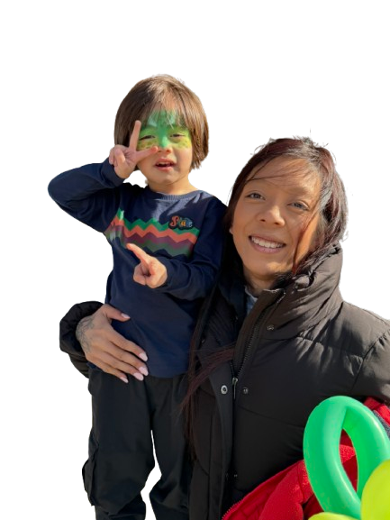

"Créer, transmettre, coder et jeux vidéo."
Contacte-moi
Je m'appelle Amandine, maman solo, Animatrice multimédia et développeuse web front-end. Ma
reconversion professionnelle à commencé avec une formation longue en développement web et
applications mobiles chez MolenGeek, un
grand tourant dans ma vie.
Depuis, je conçois des sites web responsives, accessibles et
J'anime des ateliers pour les jeunes, en transmetant ma passion de la
programmation aux jeunes, en les initiant à des outils comme Scratch, Arduino ou Micro:bit.
Passionnée par les jeux vidéo et les technologies créatives, J’aime
accompagner les personnes dans leur adaptation aux nouvelles technologies, en rendant le numérique
plus compréhensible, plus humain, et plus autonome.
HTML, CSS, Javascripts, composants responsives.
Scratch,Micro:bit,
Arduino,Tinkercad,...
Accompagner les enfants dans le monde de la programmation.
Accompagner le public dans l'appropriation des outils et usage numérique.
Je conçois des sites web front-end modernes, responsives et accessibles. Chaque projet est pensé pour s’adapter à tous les écrans, avec une identité visuelle forte, claire et engagée.
J’accompagne les débutant(es) et les curieux(ses) dans l’apprentissage du développement web. HTML, CSS, JavaScript, Git : je m’adapte à votre rythme et vos objectifs.
J’anime des ateliers créatifs autour de la programmation avec Scratch, Micro:bit ou Arduino. Une approche ludique pour éveiller la curiosité numérique et l’autonomie dès le plus jeune âge.